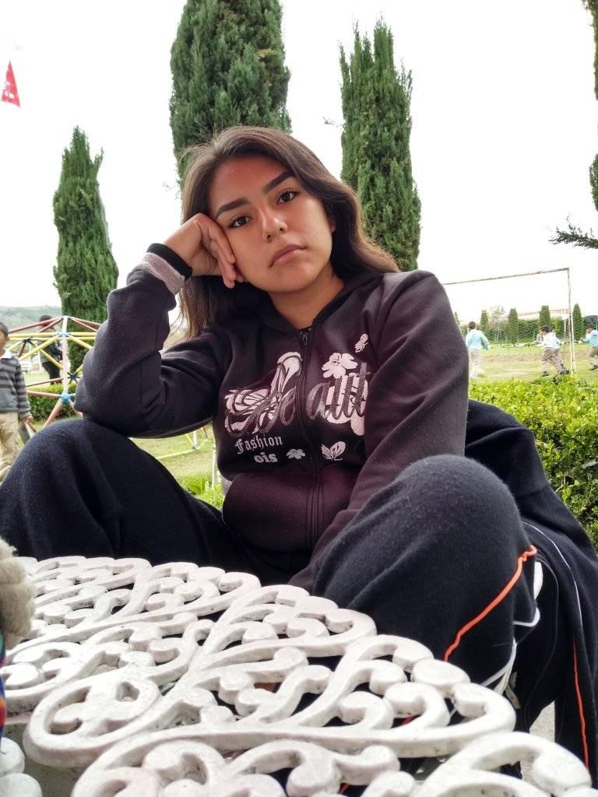

Estudios

Prescolar
Segundo de prescolar
Realmente estuve en dos prescolares diferentes en la ciudad de Puebla y no tengo fotos de eso, solo llegué a encontrar esa que fue de un festival del día de las madres.

Primaria
Primer grado
Al terminar mi primaria, mis padres y mi familia nos mudamos de estado y municipio, al cual tuve que entrar a una escuela que realmente estaba muy fea. Yo decía de pequeña que me habían internado.

Secundaria
Tercer grado
Para la secundaria también estuve en dos diferentes, pero en los dos lugares fueron etapas y comportamientos muy diferentes.

Bachillerato
Cuarto semestre
Para este momento me volví a cambiar de bachiller y realmente me gustaba mucho esta escuela, pero llegó pandemia y no pude disfrutar esa etapa al 100%.